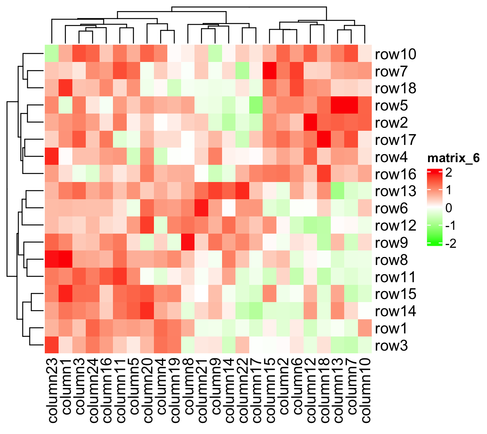

# A tibble: 6 × 2
weight genotype
<dbl> <chr>
1 0.23 WT
2 0.31 WT
3 0.28 WT
4 0.23 WT
5 0.19 WT
6 0.21 WT Visualization
The 10 rules of good graphs

Common pitfalls.
- A good source of reflexions on graphical representation is:

Common pitfalls 1/5


- Inaccessible colors (here for color blind people)
Common pitfalls 2/5

- Chart junk.
Common pitfalls 5/5

- Wrong geometry (for what you show)
The exercise we gave you
All elements of this grammar of graphics is illustrated by the exercise we gave you by e-mail

exercise:
Correct this code to get this graphic
(hint, we use viridis)

Statistical Annotations with ggpubr
- compute comparisons and display the p-values

Statistical Annotations with ggpubr
- compute comparisons and display the p-values
msleep %>%
group_by(order) %>%
filter(n()>=6) %>%
ggplot( aes(order, sleep_total, fill = order)) +
geom_boxplot() +
stat_compare_means(label.y = 22) +
stat_compare_means(comparisons = list(
c("Artiodactyla", "Carnivora"),
c("Artiodactyla", "Primates"),
c("Artiodactyla", "Rodentia")
), label = "p.signif") +
theme_classic2()
Statistical Annotations with ggpubr
- Display p-value from another test procedure
myTests <- data.frame(
group1 = c("Artiodactyla", "Primates" , "Artiodactyla", "Rodentia", "Rodentia", "Rodentia") ,
group2 = c("Carnivora" , "Carnivora", "Primates" , "Primates", "Carnivora", "Artiodactyla"),
p = c(0.0076 , 0.79 , 0.0012 , 0.047 , 0.045 , 0.00057),
other = c("S" , "NS" , "S" , "S" , "S" , "S")
)
msleep %>%
group_by(order) %>%
filter(n()>=6) %>%
ggplot( aes(order, sleep_total, fill = order)) +
geom_boxplot() +
stat_pvalue_manual( myTests, y.position = 17, step.increase = 0.05, label = "other", tip.length = 0.01) +
theme_classic2()
Add (mathematical) expressions
ggplot(mtcars, aes(x = wt, y = mpg)) +
geom_point() +
geom_smooth(method = "lm", se = TRUE) +
stat_cor(label.x = 3, label.y = 34) +
stat_regline_equation(label.x = 3, label.y = 32) +
labs(
title = expression(mpg == beta[0] + beta[1]*wt + epsilon[i]),
x = expression(log[10](Wt)),
y="Fuel consumption"
)+
theme_classic()
exercice
- start with this plot
- use the Mathematical Annotations listed in
?plotmath - Correct the axis label and add the regression formula

Complex heatmap
- specific plots like heatmap often have dedicated packages
- here we choose the heatmap since
- it is widely used
- we will use it tomorrow in the main exercise.


Heatmap structure


make a basic heatmap

Basic layout includes
- the heatmap.
- the row and column labels.
- a default clustering.
complete the heatmap: add annotations
- using a dataframe directly give and overview

complete the heatmap: add annotations
We have more control by selecting each annotations to be displayed separately
column_annot <- HeatmapAnnotation(
order=anno_barplot(column_info$order),
category=column_info$category)
row_annot <- HeatmapAnnotation(
score=anno_barplot(row_info$score),
cond=row_info$cond, which = "row")
Heatmap(mat,
name="my heatmap",
column_title = "column maybe genes",
row_title = "row maybe samples" ,
top_annotation = column_annot,
left_annotation = row_annot
)
customise colors : main

- you set the limits of the colors yourself
- ⇒ enables you to compare heatmaps
customise colors : annotations
column_annot <- HeatmapAnnotation(
order=anno_barplot(column_info$order),
category=column_info$category,
col=list(category=c("0"="#AAE89CFF", "1"="#79DB6BFF", "2"="#32CD32FF"))
)
row_annot <- HeatmapAnnotation(
score=anno_barplot(row_info$score),
cond=row_info$cond, which = "row",
col=list(cond=c("TRUE"="black", "FALSE"="white"))
)
Heatmap(mat,
name="my heatmap",
column_title = "column maybe genes",
row_title = "row maybe samples" ,
top_annotation = column_annot,
left_annotation = row_annot,
col = main_col_fun
)
customise colors : titles

customise positions

customise clustering
- either use or remove the clusetering

customise clustering
- either use or remove the clusetering
[1] 6 3 4 5 1 9 2 10 7 8 [1] 10 2 4 1 8 6 5 12 9 7 11 3
customise clustering
- We can change the display of the dendrogram

customise clustering
- We can change the parameters as in
hclut

customise clustering
- We can give a already made dendrogram

split heatmap
- by clustering using
row_km/column_kmorcolumn_split/row_split

split heatmap
- by categorical variables

Split a plot by conditions: facet
- See the course for R beginners

Split a plot by conditions: facet

Split a plot by conditions: facet

Make one plot from several: aplot
- Working code example
library(aplot)
p <- ggplot(mtcars, aes(mpg, disp)) + geom_point()
p2 <- ggplot(mtcars, aes(mpg)) +
geom_density(fill='steelblue', alpha=.5) +
ggfun::theme_noxaxis()
p3 <- ggplot(mtcars, aes(x=1, y=disp)) +
geom_boxplot(fill='firebrick', alpha=.5) +
theme_void()
p %>%
insert_top(p2, height=.3) %>%
insert_right(p3, width=.1)
patchwork Basic usage
+ group the plots

patchwork Basic usage
| put the plots side by side

patchwork Basic usage
/ stack the plots together

patchwork set the layouts
plot_layout give a finer control over the resulting plot

patchwork set the layouts
plot_layout give a finer control over the resulting plot

patchwork set the layouts

patchwork nesting levels

patchwork Add other customisation

patchwork Add other customisation

patchwork Add other customisation

for loops: example